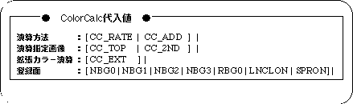
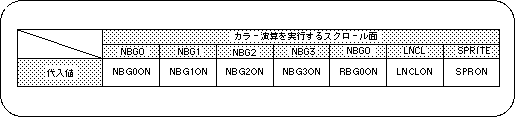
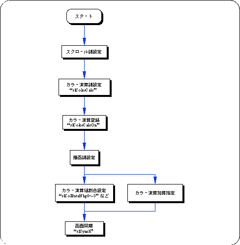

Return to previous page | Return to menu | Go to next page
With SGL, it is possible to calculate the color data of the top image and second image obtained by comparing the priority of the sprite and each scroll screen at the specified ratio and display it on the screen.
By using this function, it is possible to draw other scroll surfaces and sprites that are hidden behind a certain scroll so that they gradually float.
To perform color calculation processing, the following steps must be taken.
1) Color calculation processing settings
Use the function “slColorCalc” to set the color calculation processing settings, and use the function “slColorCalcOn” to determine the scroll plane that will be affected by the color calculation.
For the parameter, substitute the value shown in the figure below that corresponds to the color calculation processing control to be used.
For details on the parameters, refer to “HARDWARE MANUAL vol.2: VDP2 User's Manual Chapter 12 Color Calculation”.

Note) The above values are defined in “sl_def.h” included with the system.
There are two main modes for color calculation.
Add by percentage: Color calculation (CC_RATE) by specifying the calculation ratio of TOP image and 2ND image Add as it is: Color calculation (CC_ADD) with simple addition of TOP image and 2ND image

Note) The values in the above table are defined in “sl_def.h” included with the system.
2) Color calculation value setting
Scroll planes that have been set and registered for color calculation are actually executed by using the functions “slColRateNbg0-3”, “slColRateRbg0”, “slColRateLNCL”, and “slColRateBACK” that correspond to each scroll plane. (Specified as a ratio).
However, the ratio specification has no meaning when the addition method is adopted for color calculation.
The flow of color calculation processing can be roughly summarized as follows.
